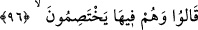
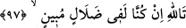
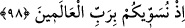
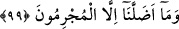
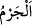
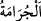
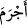

birleştikleri gibi azabda da beraber olmaları içindir.
96. Orada birbirleriyle çekişerek şöyle derler:
Bu cümle, açıklama için başlangıç cümlesidir (isti’nâf-ı beyâniyye). Yani onların sözü
cehennemde kendileriyle beraber olanlarla, mâbudlarına hitap ederek hasımlaşma
sadedinde söylenmiştir. Allah bu putlara, konuşma ve anlama gücü verir. Putlara
tapanlar, kendilerine yapılanlar yapılınca günahlarını itiraf ederek şöyle derler:
97. Vallahi, biz gerçekten apaçık bir sapıklık içindeymişiz.
Yani, vallâhi durum şu ki, biz gizliliği olmayan apaçık bir dalâlet/sapıklık
içindeymişiz.
98. Çünkü biz sizi âlemlerin Rabbi ile eşit tutuyorduk.
Onların apaçık bir sapıklık içinde olmalarının sebebini bildirmektedir. Muzâri
sıygası, zihinde mazîye âit bir sûreti canlandırmak için kullanılmıştır. Yâni ey putlar,
vallahi biz sizi ibadete müstehak olma konusunda âlemlerin Rabbına eşit tutarak apaçık
bir dalalet ve sapıklık içindeymişiz. Halbuki siz O’nun yarattıkları arasında en değersiz,
en hakir ve en âcizleriymişsiniz.
99. Bizi ancak o günahkârlar saptırdı.
“Bizi ancak o günahkârlar” reisler ve büyükler, büyüklerden kötü olanlar ve kötü
işler yapanlar “saptırdı.” Hidâyetten dalâlete çağırdı/çevirdi. Nitekim başka bir âyette
de: “Ey Rabbimiz! Biz reislerimize ve büyüklerimize uyduk...” (el-Ahzâb, 33/67)
buyrulmuştur.
“
”in asıl anlamı, ağaçtan meyveyi kesmek demektir. “
” âdî hurma
anlamınadır. “
” cürüm sahibi oldu, suç işledi, demektir. Sonra bu fiil, istenmeyen her